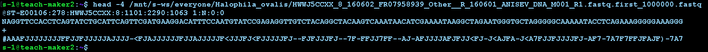
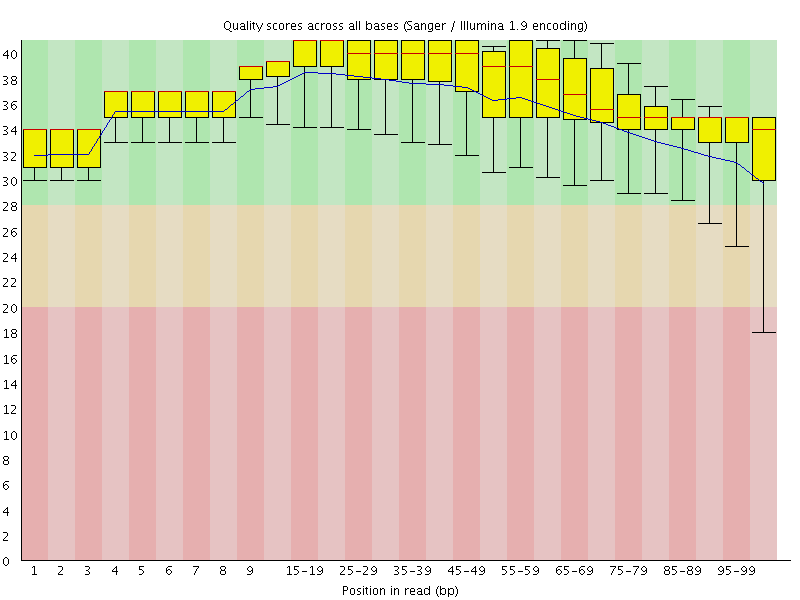

8 From Sequencing to Genome Alignment
8.1 Sequencing
Description: Sequencing is the process of determining the nucleotide sequence of a DNA molecule. Modern sequencing technologies, such as Illumina, PacBio, and Oxford Nanopore, generate large amounts of raw sequence data.
Files Produced: - FASTQ: Contains raw sequencing reads with associated quality scores.
8.1.1 What’s a fastq file?
A FASTQ file consists of a series of records, with each record representing a single sequence read. Each record typically consists of four lines in the following format:
Sequence Identifier (ID)Line: Begins with a “@” symbol and contains a unique identifier for the sequence read. This line is used to keep track of the individual read and may include additional information about the read and the sequencing process.SequenceLine: Contains the actual DNA or RNA nucleotide sequence of the read. It consists of a string of characters, where each character represents a specific nucleotide (A for adenine, C for cytosine, G for guanine, and T for thymine in DNA, or U for uracil in RNA).Quality IdentifierLine: Starts with a “+” symbol and is usually just a repetition of the identifier from the Sequence Line.Quality ScoresLine: Contains a string of characters representing the quality scores of the corresponding bases in the Sequence Line.
Let’s have a better look!
head -4 /mnt/s-ws/everyone/Halophila_ovalis/HWWJ5CCXX_8_160602_FR07958939_Other__R_160601_ANISEV_DNA_M001_R1.fastq.first_1000000.fastq
8.1.1.1 Quality
The quality, also called phred score, is the probability that the corresponding basecall is incorrect.
Phred scores use a logarithmic scale, and are represented by ASCII characters, mapping to a quality usually going from 0 to 40.
| Phred Quality Score | Probability of incorrect base call | Base call accuracy |
|---|---|---|
| 10 | 1 in 10 | 90% |
| 20 | 1 in 100 | 99% |
| 30 | 1 in 1000 | 99.9% |
| 40 | 1 in 10,000 | 99.99% |
| 50 | 1 in 100,000 | 99.999% |
| 60 | 1 in 1,000,000 | 99.9999% |
8.1.2 Some sanity checks first
4 lines per reads We don’t want to work with broken data. Let’s count how many reads are in each file! A fastq file has 4 lines for each read
wc -l /mnt/s-ws/everyone/Halophila_ovalis/*fastqCheck out last lines (broken copies usually have broken last line) tail gives you X last lines, -4 gives you the last read
tail -4 /mnt/s-ws/everyone/Zostera_marina/SRR9879327.sra_1.first_1000000.fastqlet’s look at them all
for fastq_file in /mnt/s-ws/everyone/Halophila_ovalis/*fastq;
do
echo $l # print the name of the file
tail -4 $fastq_file # print the last four lines
doneOther possibilities: Check md5sum md5sum is a tiny combination of letters which is generated based on the content of the file. It can be used to proof that a file is identical with another one
md5sum /mnt/s-ws/everyone/Zostera_marina/SRR9879327.sra_1.first_1000000.fastqThe long thing 92764326cc31706559eb20dab0ce4142 is the MD5 hash, this is reasonably unique for this particular file and can be used to identify it, or to check whether two files are identical (NOTE: In some rare cases two files can have the same md5sum, but for all intents and purposes we can ignore that, it’s extremely rare to happen by chance)
8.2 Quality Control and Trimming
Description: Ensuring the quality of raw sequencing data is critical. This step involves identifying and filtering out low-quality reads and adapter sequences.

Files Produced: - Trimmed FASTQ: Quality-filtered reads.
Tools/Software: - FastQC: Quality assessment of raw reads. - Trimmomatic or Cutadapt: Trimming adapters and low-quality bases.
8.2.1 FastQC
Let’s look at sequencing qualities - we’ll use FASTQC. FastQC (Fast Quality Control) is a widely used bioinformatics tool designed to assess the quality of high-throughput sequencing data, such as data generated from next-generation sequencing (NGS) platforms. https://www.bioinformatics.babraham.ac.uk/projects/fastqc/
8.2.1.1 Running FastQC for Quality Check
To run FastQC on a specific FASTQ file, you can use the following command:
./fastqc -o output/filename input_fastq_file
/mnt/s-ws/everyone/FastQC/fastqc -o /mnt/s-ws/s-100/myresults /mnt/s-ws/everyone/Zostera_marina/SRR9879327.sra_1.first_1000000.fastq
# If the previous line gives error run the following line
fastqc -o /mnt/s-ws/s-100/myresults /mnt/s-ws/everyone/Zostera_marina/SRR9879327.sra_1.first_1000000.fastq
8.2.1.2 Breaking Down the Command
FastQC Executable Path:
/mnt/s-ws/everyone/FastQC/fastqcThis is the path to the FastQC executable. Make sure to use the correct path where FastQC is installed on your system.
Output Directory Option (
-o):-o /mnt/s-ws/s-100/myresultsThe
-ooption specifies the directory where FastQC will save its output files. In this example, the results will be saved to/mnt/s-ws/s-100/myresults. Make sure that you have created a foldermyresultsin your working directory.Input FASTQ File:
/mnt/s-ws/everyone/Zostera_marina/SRR9879327.sra_1.first_1000000.fastqThis is the path to the FASTQ file you want to analyze. In this example, it is
/mnt/s-ws/everyone/Zostera_marina/SRR9879327.sra_1.first_1000000.fastq.Check Results: Once the command finishes running, navigate to the output directory to check the results:
cd /mnt/s-ws/s-100/myresultsYou will find several files, including:
- A
.htmlfile: An interactive report with various quality metrics. - A
.zipfile: Contains all the raw data and plots used in the HTML report.
- A
Open the HTML file in a web browser to view the detailed quality report.
8.2.1.3 FastQC report
A FastQC report is a quality control report generated by the FastQC software, which is widely used to assess the quality of sequencing data, particularly data from high-throughput sequencing technologies like Illumina. The FastQC report provides valuable insights into the quality of the raw sequencing data and helps to identify potential issues that might affect downstream analyses.
Here’s an explanation of the key components and sections typically found in a FastQC report:
Basic Statistics: This section provides general statistics about the input data, such as the total number of reads, the read length distribution, the percentage of GC content, and the overall sequence duplication levels. These statistics give an overview of the sequencing run and provide information about the diversity and complexity of the library.
Per Base Sequence Quality: This section displays a graph showing the average quality scores for each position in the read. Quality scores are represented using Phred scores, and a higher Phred score indicates higher sequencing accuracy. This graph helps identify regions of the read with lower quality, which might be affected by sequencing errors or other issues.
Per Sequence Quality Scores: In this section, a box plot or histogram is provided to show the distribution of quality scores across all reads. It helps assess the overall quality of the sequencing data and identify any systematic biases or anomalies.
Per Base Sequence Content: This section shows the percentage of each nucleotide (A, C, G, T, or U) at each position in the read. It helps identify biases in nucleotide composition that might indicate issues with library preparation or sequencing chemistry.
Per Sequence GC Content: This graph shows the distribution of GC content across all reads in the dataset. Deviations from the expected GC content could indicate problems with the library or biases in the sequencing process.
Per Base N Content: The graph in this section shows the percentage of ambiguous or undetermined bases (N) at each position in the read. High N content might indicate sequencing or library preparation issues.
Sequence Length Distribution: This section provides a histogram of read lengths, helping to identify any variations in read length that might affect downstream analyses.
Overrepresented Sequences: In this section, FastQC lists any sequences that are overrepresented in the dataset. These could be contaminants or adapter sequences that need to be removed before further analysis.
Adapter Content: This section checks for the presence of known adapter sequences in the reads. If adapters are detected, it suggests potential issues with library preparation or sequencing.
8.2.2 Quality control using fastp
For EVERY sequencing project, you have to run quality control!
Usually: Remove low quality regions from reads, and remove adapters
As a first step, let’s use a data-cleaning program to clean our reads We’ll use fastp since it’s easy to use For more information about fastp click on this link
8.2.2.1 Paired-end sequence reads
In paired-end sequencing, DNA or RNA fragments are sequenced from both ends, producing two separate sequence reads for each fragment.
8.2.2.2 Single end data
fastp -i in.fstq -o out.fastq 8.2.2.3 For paired end data
fastp -i in.R1.fastq -I in.R2.fastq -o out.R1.fastq -O out.R2.fastq- -i input file 1 (pair 1 for paired end read)
- -I input file 2 for paired end reads
- -o output file 1 (pair 1 for paired end read)
- -O output file 2 for paired end reads
fastp -i /mnt/s-ws/everyone/Zostera_muelleri/MB_Z_ATCACG_L006_R1_001.fastq.first_1000000.fastq -o /mnt/s-ws/s-100/myresults/R1_001.fastq.first_1000000.trimmed.fastq -I /mnt/s-ws/everyone/Zostera_muelleri/MB_Z_ATCACG_L006_R2_001.fastq.first_1000000.fastq -O /mnt/s-ws/s-100/myresults/R2_001.fastq.first_1000000.trimmed.fastqThis should take a few seconds to minutes, will print some statistics Is the output as expected from the FASTQ output?
check output files with ls and less:
ls -lhThis should take a few seconds to minutes, will print some statistics Is the output as expected from the FASTQ output?
check output files with ls and less:
ls -lh
wc -l /mnt/s-ws/everyone/Zostera_muelleri/MB_Z_ATCACG_L006_R1_001.fastq.first_1000000.fastq
wc -l myresults/R1_001.fastq.first_1000000.trimmed.fastq
wc -l /mnt/s-ws/everyone/Zostera_muelleri/MB_Z_ATCACG_L006_R2_001.fastq.first_1000000.fastq
wc -l myresults/R2_001.fastq.first_1000000.trimmed.fastq8.3 Genome Alignment
Now we have cleaned reads. That concludes the QC part and we can actually start on the biology! Genome alignment refers to the process of comparing and aligning entire genomes or large genomic segments to identify regions of similarity, differences, and structural variations. This process is crucial in comparative genomics, evolutionary biology, and functional genomics.
We’ll align these reads against two given references to see whether we can find any missing genes. We’ll use bowtie2 to align these reads.
- A reference genome is a collection of contigs
- A contig is a stretch of DNA sequence encoded as A,G,C,T,N
- Typically comes in FASTA format.
8.3.1 bowtie2
bowtie2 is a widely used bioinformatics tool that aligns DNA or RNA sequencing reads to a reference genome. bowtie2
8.3.2 Build and index the reference database using bowtie2
To use Bowtie2, you must first create an index of the reference genome or transcriptome you want to align your reads to. Indexing is a preprocessing step that allows Bowtie2 to rapidly search for and align reads against the reference. You only need to index the reference once, and it generates a set of files with specific extensions that Bowtie2 uses during the alignment process. The indexing is done using the bowtie2-build command:
bowtie2-build reference_genome.fasta reference_index
Here, reference_genome.fasta is the file containing the reference genome sequence, and reference_index is for the generated index files.
bowtie2-build /mnt/s-ws/everyone/scie4002_refs/najas.fasta /mnt/s-ws/s-100/myresults/najas_reference
# or if the previous line does not work
bowtie2-build /mnt/s-ws/everyone/najas.fasta /mnt/s-ws/mamun/myresults/najas_reference
ls /mnt/s-ws/s-100/myresults/*najas* -lh 8.3.3 Align your cleaned reads with the reference
After indexing the reference, you can align your sequencing reads using Bowtie2. The typical input for Bowtie2 is paired-end reads (two separate files containing forward and reverse reads) or single-end reads (one file). The basic command to align reads is:
bowtie2 -x reference_index -1 forward_reads.fastq -2 reverse_reads.fastq -S output.samIn this command:
-xspecifies the indexed reference genome.-1and-2provide the paths to the input FASTQ files containing paired-end reads (forward and reverse reads).-Sdesignates the output file in SAM format, which contains the alignment results.
bowtie2 -x /mnt/s-ws/s-100/myresults/najas_reference -1 /mnt/s-ws/s-100/myresults/R1_001.fastq.first_1000000.trimmed.fastq -2 /mnt/s-ws/s-100/myresults/R2_001.fastq.first_1000000.trimmed.fastq -S /mnt/s-ws/s-100/myresults/Alignments.sam 8.3.4 Output and Formats:
Bowtie2 generates alignment results in SAM (Sequence Alignment/Map) format by default. The output SAM file contains information about each read’s alignment position, quality, and other mapping-related details. You can further process the SAM file using other bioinformatics tools for downstream analysis. A typical SAM (Sequence Alignment/Map) file is a text-based format used to store the results of sequence read alignments to a reference genome or transcriptome. It provides a standardized way to represent the mapping information, quality scores, and additional metadata for each aligned read. SAM files are widely used in bioinformatics and are essential for various downstream analyses, including variant calling, gene expression quantification, and genome assembly.
Here’s a description of the main components of a typical SAM file:
Header Section: The SAM file starts with the header section, which contains metadata and information about the reference genome, software used, and other optional details. The header lines begin with the ‘@’ symbol.
Alignment Records: Following the header section, each alignment record corresponds to a single read that has been aligned to the reference genome. Alignment records start with fixed fields, each separated by a tab character, representing important information about the read and its alignment.
- QNAME: Read name or identifier. It should be unique within the file.
- FLAG: Bitwise flags representing various properties of the read and alignment, such as paired-end, strand, read unmapped, etc.
- RNAME: Reference sequence name where the read is aligned. It refers to the reference genome sequence identifier. If there will be no alignmet, it will be a “*“.
"*"is the special letter SAM files use to mean ‘no reference sequence’ - POS: 1-based leftmost position of the aligned read on the reference genome.
- MAPQ: Mapping quality score, representing the confidence of the alignment.
- CIGAR: CIGAR string indicating the alignment details, including matches, insertions, deletions, etc.
- RNEXT: Reference sequence name of the mate/next read for paired-end data.
- PNEXT: 1-based position of the mate/next read on the reference genome for paired-end data.
- TLEN: Signed observed template length for paired-end data.
- SEQ: Read sequence.
- QUAL: Quality scores corresponding to each base in the read sequence.
Optional Fields: After the fixed fields, there can be optional fields that provide additional information about the read, alignment, or experimental conditions. These fields are tab-separated and have a TAG:VALUE format. For example,
AS:i:100indicates an alignment score of 100.
A sample alignment record in a SAM file might look like this:
ERR1234567.1 83 chr1 100 30 50M = 200 100 ATCGATCGATCGATCGATCGATCGATCGATCGATCGATCGATCGATCGATCGATCGATCGATCG + !"#"$%&'()*+,-./0123456789:;<=>?@ABCDEFGHIJKLMNOPQRSTUVWXYZ[\]^_`abcdefghSAM files are human-readable and can be processed using various bioinformatics tools and libraries. For more information click on this link https://samtools.github.io/hts-specs/SAMv1.pdf
8.3.5 samtools
For large datasets, it is common to convert SAM files to the more space-efficient BAM format using tools like samtools, as it enables faster processing and better utilization of computational resources.
bowtie2 -x /mnt/s-ws/s-100/myresults/najas_reference -1 /mnt/s-ws/s-100/myresults/R1_001.fastq.first_1000000.trimmed.fastq -2 /mnt/s-ws/s-100/myresults/R2_001.fastq.first_1000000.trimmed.fastq | samtools sort -o /mnt/s-ws/s-100/myresults/Alignments_sorted.bam8.3.5.1 Sanity check - how many reads align?
samtools view Alignments_sorted.bam | grep -v '*' | wc -lThis means: grep -v searches for the opposites, so remove all lines with , is the special letter SAM files use to mean ‘no reference sequence’ and then count the lines
8.3.5.2 Aligned reads output to a text file
samtools view /mnt/s-ws/s-100/myresults/Alignments_sorted.bam | grep -v '*' > /mnt/s-ws/s-100/myresults/aligned_reads.txt8.3.6 Use bedtools to check which genes are covered by reads
Bedtools provides a collection of powerful command-line tools that allow to perform various operations on genomic intervals, including intersections, unions, subsetting, merging, and more. A fantastic tutorial on bedtools can be found here: http://quinlanlab.org/tutorials/bedtools/bedtools.html
8.3.7 GFF3 File format
A GFF3 (Generic Feature Format Version 3) file is a standard text-based file format commonly used in bioinformatics to represent genomic annotations and features. GFF3 files provide a structured and standardized way to describe the location, properties, and attributes of various biological features on a reference genome, such as genes, exons, transcripts, and other genomic elements.
Here’s a brief overview of the key components of a GFF3 file:
Header Lines: The GFF3 file may start with optional header lines that provide general information about the data and the source of the annotations. Header lines typically begin with the ‘##’ symbol.
Feature Lines: The main part of the GFF3 file consists of feature lines, each representing a genomic feature or annotation. Feature lines have nine tab-separated columns, which define specific attributes of the feature:
- Column 1 (seqid): Name of the reference sequence (e.g., chromosome or contig) where the feature is located.
- Column 2 (source): The source or program that generated the annotation, often a database or bioinformatics tool.
- Column 3 (type): The type of the genomic feature (e.g., gene, mRNA, exon, CDS, etc.). This follows controlled vocabulary terms such as “gene,” “exon,” and “mRNA.”
- Column 4 (start): Start position of the feature on the reference sequence. It is 1-based, meaning the first position is represented as 1.
- Column 5 (end): End position of the feature on the reference sequence (inclusive).
- Column 6 (score): An optional numeric value representing the confidence or score of the feature. Often used for quantitative data like expression levels.
- Column 7 (strand): The strand of the feature, indicated by a “+” (forward strand) or “-” (reverse strand).
- Column 8 (phase): For features like coding sequences (CDS), this column specifies the reading frame (0, 1, or 2) with respect to the start codon.
- Column 9 (attributes): A semicolon-separated list of key-value pairs representing additional information about the feature. Common attributes include gene IDs, transcript IDs, gene names, and other feature-specific details.
Comment Lines: GFF3 files may also include comment lines that provide additional context or explanations for the annotations.
GFF3 files are widely used in genome annotation projects, as they offer a consistent and flexible format to store genomic feature data. Various bioinformatics tools and genome browsers support GFF3 files, allowing researchers to visualize and analyze genomic annotations effectively.
Use bedtools to check which genes are covered by reads
bedtools intersect -a /mnt/s-ws/everyone/scie4002_refs/najas.gff3 -b /mnt/s-ws/s-100/myresults/Alignments_sorted.bam | grep gene | lessThe command bedtools intersect is used to find overlapping features between two files, one in BED/GFF/GTF format (-a), and the other in BAM format (-b).
In this specific case: - -a /mnt/s-ws/everyone/scie4002_refs/najas.gff3: This specifies the input file in GFF3 format, containing features (e.g., genes, transcripts, regions) of interest from the “najas” reference genome. - -b /mnt/s-ws/s-100/myresults/Alignments_sorted.bam: This specifies the input file in BAM format, containing read alignments (typically from a sequencing experiment) aligned to the “najas” reference genome.
The command will identify any overlapping features between the GFF3 file and the aligned reads in the BAM file. The resulting output will show which reads align to the annotated features in the GFF3 file, providing information about the spatial relationship between the reads and the annotated genomic elements.
The | (pipe) symbol is used to pass the output of the bedtools intersect command as input to the grep command. The grep command is then used to filter the output and only show lines containing the word “gene.”
In summary, the entire command will identify any overlapping features between the GFF3 file and the aligned reads in the BAM file and then filter the output to show only those lines that correspond to genes present in the GFF3 file. This can help extract information specifically related to genes from the alignment results.
8.3.7.1 Can you output this to a text file?
Now we’ll use bedtools to check whether any reads don’t align to our given genes
bedtools intersect -v -a /mnt/s-ws/everyone/scie4002_refs/najas.gff3 -b /mnt/s-ws/s-100/myresults/Alignments_sorted.bam | grep gene | less- -v means invert - which genes have 0 coverage?
- What are these genes?
Google!